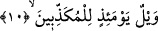
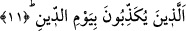

ifâdesi, her iki anlama da tefsir edilmiştir. Buna göre âyette denmiş oluyor ki; o yazısı
çok açık ve net, kendisine bakanın büyük bir çaba harcamadan içinde ne olduğunu
görebileceği bir kitaptır. Veyahut bu kitap öğretici bir kitaptır, ona bakan içinde adı
geçen kimseler için hayır olmadığını hemen anlar. Bir başka ifâdeyle bu kitap, içinde
adı geçenlerin şakî ve cehennemlik olduğunu gösteren alâmetler vardır. Bu kitabın
kötüye işâret olduğu ifâdenin gelişinden anlaşılmaktadır. Zira makam, korkutma
makamıdır.
Kaffal der ki: “Kitabun merkum” ifâdesi “siccîn” kelimesinin tefsiri değildir. Tam
tersine yedinci âyette yer alan “inne”nin haberidir. Buna göre âyetin mânâsı şöyle olur:
Günahkarların kitabı siccîn’dedir ve o kitap yazılmış bir kitaptır. Bu durumda sekizinci
âyetteki “Siccîn nedir bilir misin?” ifâdesi, iki haber arasına girmiş mu’teriza
cümlesidir.
Kâşânî ise okuduğumuz âyeti şöyle tefsir ediyor: “Günahkarların yazısı” yâni
ahlaksızlıkları işleyen kimselerin amellerinin yazısı... Bunlar şeriatın ve aklın birlikte
kabul ettikleri adâlet sınırından çıkarak günah işlemişlerdir. İşte bunların yazısı
siccîn’dedir. Yani varlık mertebelerinden bir mertebededir ve onları işleyen
günahkarlar kapkaranlık ve dapdar hapislerdedir. Kaplumbağalar, yılanlar ve akrepler
gibi karınları üzere sürünerek yol alırlar. Onlar tabiat mertebelerinin en aşağısında ve
en dibinde hakir bir haldedirler. Bu kitap, şer ehlinin amellerinin yazıya geçirildiği
divandır. Bu nedenle “kitabun merkum” şeklinde tefsir olunmuştur. Yani o kimselerin
kötü amellerinin yazılmış olduğu yer, “kitabun merkum”dur. O, onların ahlaksızlıklarının
ve kötülüklerinin hey’etlerinin yazılarıyla yazılmış bir kitaptır.
10. O gün vay hâline yalancıların!
“O” insanların âlemlerin Rabbinin huzurunda divan duracakları “gün vay hâline
yalancıların!” Bu durumda bu âyet, daha önce geçen altıncı âyete bitişik demektir. Bu
âyetle altıncı âyet arasında geçen âyetler ise mu’teriza (parantez arası) cümlesidir. Bazı
âlimlere göre ise âyetin mânâsı; “o Allah Teâlâ’nın bu kitabı verecek olduğu gün vay
hâline yalancıların!” şeklindedir.
Kâşifî demiştir ki; “veyl” bütün kötülükleri câmî bir kelimedir. Yani azap, ikab,
şiddet ve mihnet o gün yalancılar içindir.